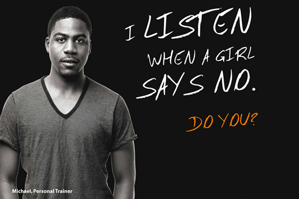
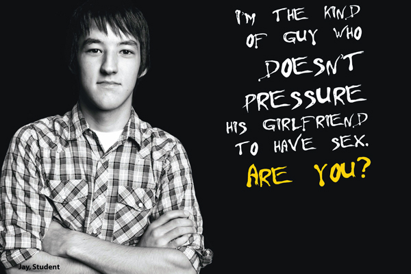
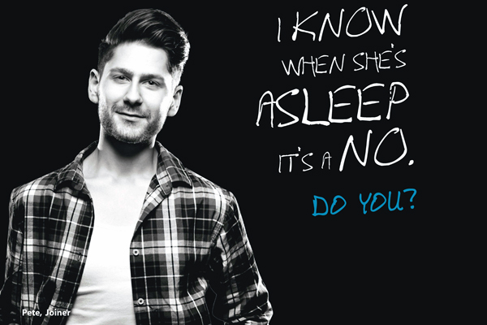

Research, copy, and the message that had to land.
My role was creative communication development and campaign messaging, aligned with the media strategy to ensure clarity, reach and public discussion. This meant writing the copy that carried the campaign's central argument, and ensuring that argument was both unambiguous and impossible to dismiss.
Most campaigns told women how to stay safe.
Sexual assault prevention campaigns have historically been directed at potential victims: advice on how to dress, where to go, who to trust, how to leave. The implicit message being that safety is the responsibility of the person at risk.
Research conducted by Police Scotland identified a different and more uncomfortable gap: many young men did not clearly recognise that sex without explicit consent constitutes rape. This was not a knowledge gap about the law. It was a recognition gap about everyday situations.
"The campaign needed to shift the conversation from victim precaution to bystander responsibility."
The challenge was to address this without alienating the audience the campaign most needed to reach. An accusatory tone would cause disengagement. A preachy tone would be ignored. The message needed to travel through peer networks, not around them.
Speak to peers, not perpetrators.
The strategic reframe was the campaign's most important decision. Rather than addressing men as potential offenders, the communication positioned them as agents of prevention. The "we" in #WeCanStopIt was deliberate—collective, inclusive, social.
Prevention was framed as a social norm held by the majority, not a rule imposed by authority. The campaign borrowed the language and visual logic of peer communication rather than institutional messaging, making it shareable, discussable and credible within the networks it needed to reach.
#WeCanStopIt
The central line was written to be unambiguous. No euphemism. No softening. No room for misreading. The clarity of the language was the strategy—if the message could be misread, it could be ignored.
Neon. Peer portraits. One line.
The campaign ran two visual systems simultaneously. The neon poster series used everyday social scenarios—Club. Dance. Taxi. Sex—to name the exact contexts where consent is misread or ignored. Each poster ended with the same unambiguous statement. The peer portrait series put real-looking men on camera with direct first-person pledges, normalising the behaviour the campaign was trying to spread.

The neon format borrowed from nightlife culture—the exact environments where the campaign's message most needed to land. Each poster named a plausible social sequence and interrupted it with a single legal and moral fact.


The peer portrait series placed real-looking men—identified by name and occupation—in direct address to the viewer. Each portrait carried a first-person pledge rather than a third-person instruction, transferring the message from statement to social invitation.





401,251 people. Four weeks. National adoption.
National Media Outlets Covering the Launch:
"By framing prevention as a social identity that the majority already holds, the campaign gave young men a way to participate in the message rather than resist it."